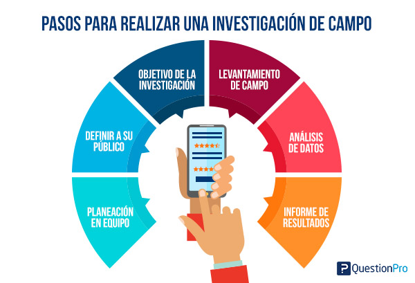

¿Qué es la Investigación de Campo?
La investigación de campo es un enfoque de investigación que implica la recopilación de datos directamente del entorno real en el que ocurren los fenómenos que se están estudiando. En este tipo de investigación, el investigador se desplaza al lugar donde se encuentran los sujetos o eventos de interés para recoger información de primera mano.
Caracteristicas de la Investigación de Campo:
- Recopilación de datos: El investigador recoge los datos en el lugar donde ocurren los eventos o donde se encuentran los participantes. Puede implicar la observación directa, la realización de entrevistas, encuestas, mediciones, experimentos o cualquier otro método de recolección de datos relevante para el estudio.
- Contexto real y natural: Al llevar a cabo la investigación en el campo, se tiene acceso directo al contexto real en el que se desarrollan los fenómenos estudiados. Esto permite una comprensión más completa y profunda de los factores contextuales y sociales que influyen en los resultados de la investigación.
- Interacción directa con los participantes: En muchos casos, la investigación de campo implica la interacción directa con los participantes o sujetos de estudio. Esto puede incluir entrevistas cara a cara, observación participante, grupos de discusión u otras formas de interacción directa. Esta interacción puede proporcionar información valiosa y enriquecer los datos recopilados.
- Flexibilidad y adaptabilidad: La investigación de campo a menudo requiere una gran flexibilidad y adaptabilidad. Los investigadores deben estar preparados para ajustar su enfoque y métodos según las circunstancias y desafíos que surjan durante el estudio en el campo. Esto puede incluir cambios en el diseño de investigación, métodos de recolección de datos o enfoque teórico.
- Aplicación en diversos campos: La investigación de campo se utiliza en una amplia gama de disciplinas y campos, como sociología, antropología, geografía, ciencias ambientales, estudios culturales, entre otros. Es especialmente útil cuando se necesita recopilar datos empíricos en situaciones o entornos reales.
¿Para que sirve la Investigación de Campo?
La investigación de campo es una herramienta valiosa para recopilar datos empíricos, explorar fenómenos complejos, validar teorías existentes, generar nuevas hipótesis y brindar información práctica para la toma de decisiones. Su utilidad radica en su capacidad para obtener información detallada y contextualizada, que contribuye al avance del conocimiento en diversas disciplinas y campos de estudio.
